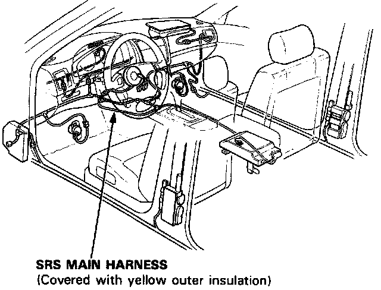
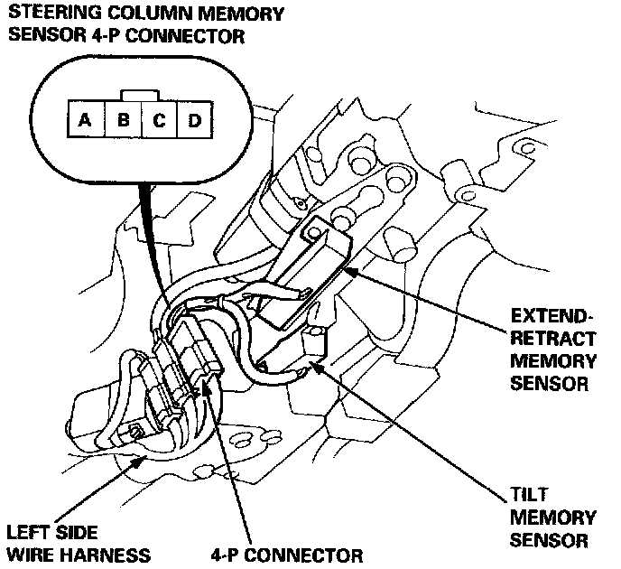
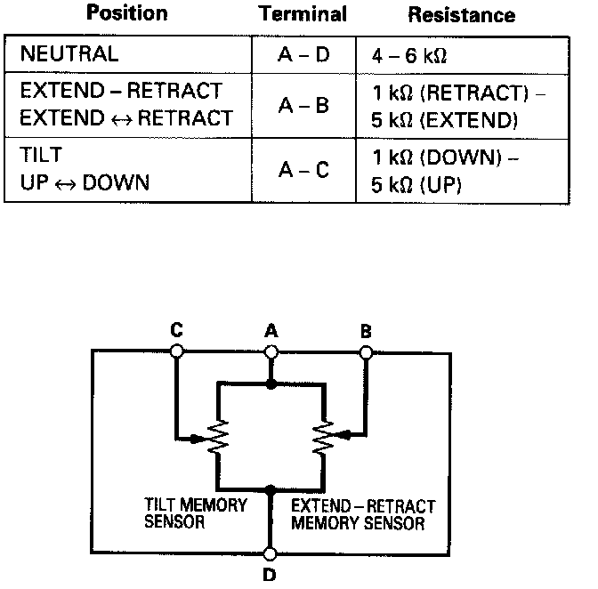

Tilt/Extend-Retract Memory Sensor Test
Tilt/Extend-retract Memory Sensor Test
CAUTION:
^ Do not install used SRS parts from another car. When repairing an SRS, use only new parts.
^ Before disconnecting any part of the SRS wire harness, install the short connectors.
^ Do not disassemble or tamper with the airbag assembly.
1. Pry the courtesy light controller and TCS switch (LS) out from the dashboard lower cover, then remove the three screws, and remove the dashboard lower cover.
2. Remove the steering column tilt cover.
3. Disconnect the left side wire harness 4-P connector from the steering column memory sensor 4-P connector.


4. Measure resistance between the terminals according to the table.